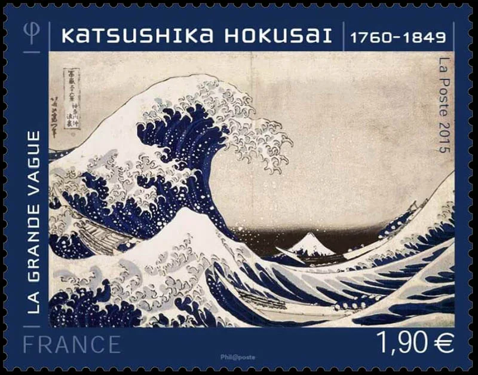
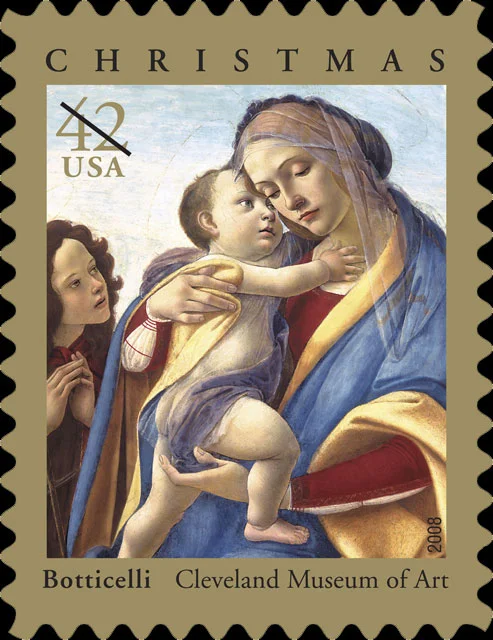
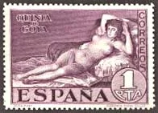
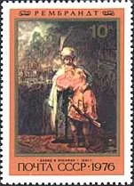
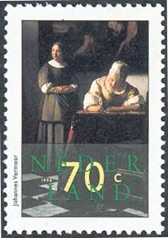
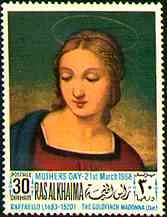
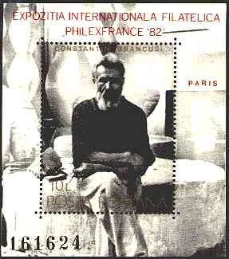

A world of art in miniature
Discover art through postage stamps.
Explore paintings, sculpture, artists, museums and cultural heritage as celebrated on postage stamps from around the world.
Art on Stamps has been sharing the intersection of art and philately since 1999.
Explore the Art Gallery ↗
A selection from the original Art on Stamps collection
From the archive
Six artists, six different perspectives

Botticelli
Explore the original collection ↗

Francisco Goya
Explore the original collection ↗

Rembrandt
Explore the original collection ↗

Johannes Vermeer
Explore the original collection ↗

Raphael
Explore the original collection ↗

Constantin Brâncuși
Explore the original collection ↗
Design preview only. Images are extracted from the supplied archive. Navigation links open existing pages on artonstamps.org. The language selector is a visual placeholder; automatic translation is not yet activated. Some sections will need a deeper migration and link audit.
Interior pages preview
Explore two redesigned articles
Browse the collection